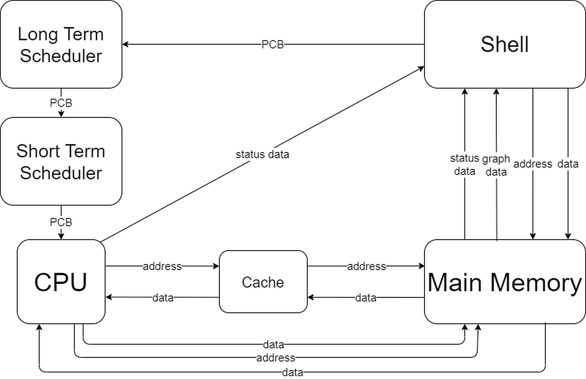

Operating System Simulator
In the first year of Computer Science at University of Surrey, for our Operating Systems module, we had to build a simulation of an OS. I planned to build my OS as if it was handling real hardware that had realistic constraints, this included having queues to act as a bus between each module, having a fetch, execute, decode cycle for each CPU instruction, having a limited instruction set and a limit of two arguments per instruction e.c.t. Each module acted independently from the rest and was made to recover from erroneous programs.
The CPU had a simple instruction set to add, subtract, multiply, divide, store, load and output. It was able to recover from erroneous instructions received from the Memory.
The Cache would intelligently load instructions from the Memory before the CPU would need them, this meant each instruction could be loaded into the CPU much faster. Data would still be fetched from the Memory, this meant my OS followed a Harvard style architecture.
My scheduler implemented a priority, time quantum and least time executed algorithm to fairly allocate CPU resources to all running programs.